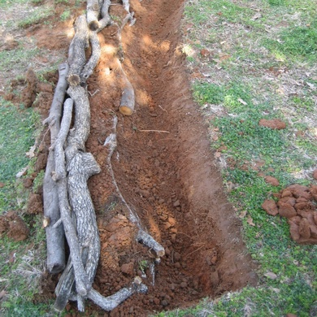
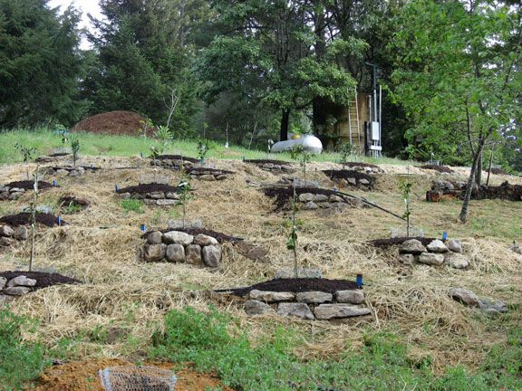
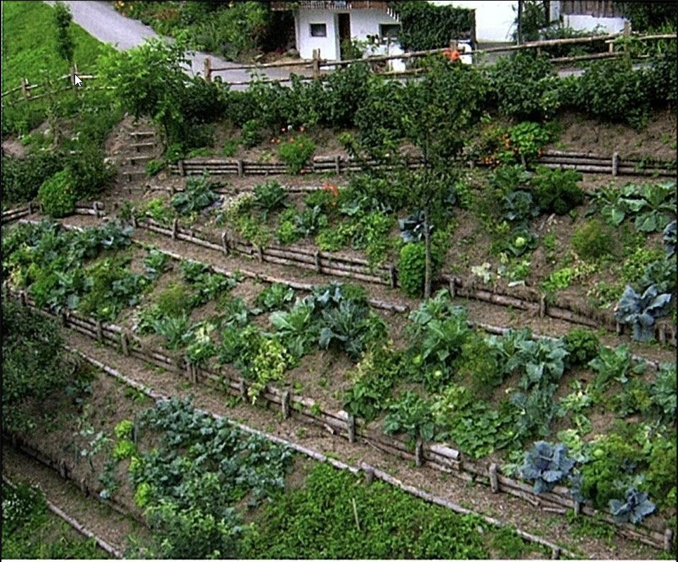
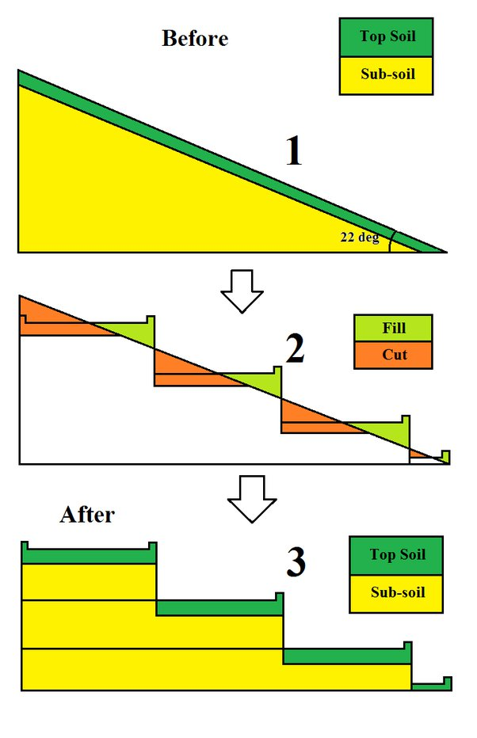
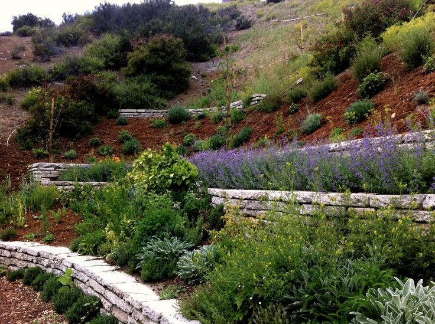

Terassen und Swales
Terrassen und Swales: Alte Techniken für moderne Permakultur
Was sind Swales?¶
Swales sind im Grunde genommen flache Gräben, die parallel zu den Höhenlinien eines Geländes angelegt werden (Nievau). Ihre Hauptfunktion ist es, Regenwasser aufzufangen und zu speichern, sodass es langsam in den Boden einsickern und von den Pflanzenwurzeln aufgenommen werden kann, anstatt ungenutzt abzufließen. Swales tragen somit zur Erosionskontrolle bei und verbessern die Bodenfeuchtigkeit.
Vorteile von Terrassierung und Swales¶
Erosionskontrolle: Verringern den Wasserabfluss und die Bodenerosion auf Hanglagen.
Verbesserte Wassernutzung: Sie ermöglichen eine effizientere Bewässerung und Wasserspeicherung in trockenen Gebieten.
Erhöhte Anbaufläche: Terrassen können auf sonst unbrauchbaren Hängen wertvolle landwirtschaftliche Flächen schaffen.
Swales
Biodiversität: Swales können Mikrohabitate für verschiedene Pflanzen- und Tierarten schaffen.
Kultureller Hintergrund¶
Terrassierung und Swales sind alte Praktiken, die in vielen Kulturen weltweit anzutreffen sind. Die Terrassierung findet man beispielsweise in den Reisterrassen Südostasiens, den Andenterrassen Südamerikas und den Olivenhainen des Mittelmeerraums. Swales wurden traditionell in ariden und semi-ariden Regionen eingesetzt, um Wasser effizient zu nutzen und die Bodenfruchtbarkeit zu verbessern.
Bezug zur Permakultur¶
In der Permakultur werden Terrassierung und Swales als Schlüsseltechniken zur Gestaltung nachhaltiger und selbsttragender Ökosysteme genutzt. Sie sind integraler Bestandteil der Permakulturprinzipien, die darauf abzielen, harmonische Beziehungen zwischen Mensch und Natur zu schaffen, indem sie die natürlichen Geländeformen nutzen, um Wasser zu speichern, Erosion zu verhindern und die Bodenfruchtbarkeit zu erhöhen.
Fazit¶
Terrassen und Swales sind bewährte Techniken, die in der modernen Permakultur und nachhaltigen Landwirtschaft Anwendung finden. Durch ihre Fähigkeit, Wasser zu konservieren, Erosion zu kontrollieren und die Bodenqualität zu verbessern, bieten sie praktische Lösungen für die Herausforderungen des Klimawandels und der Bodendegradation. Ihre Einbindung in landwirtschaftliche Systeme und Landschaftsgestaltungen spiegelt das Streben nach einer effizienteren und ökologisch verantwortungsvollen Nutzung unserer natürlichen Ressourcen wider.
the rule of thumb is: vertical fall between contour lines is about 1 meter on steep slopes (above 15 percent), reducing to 0.75 meter on greater slopes (below 15 percent).
Impressionen¶





Erstellt : 5. August 2023